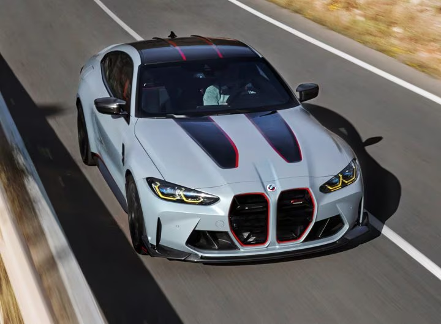
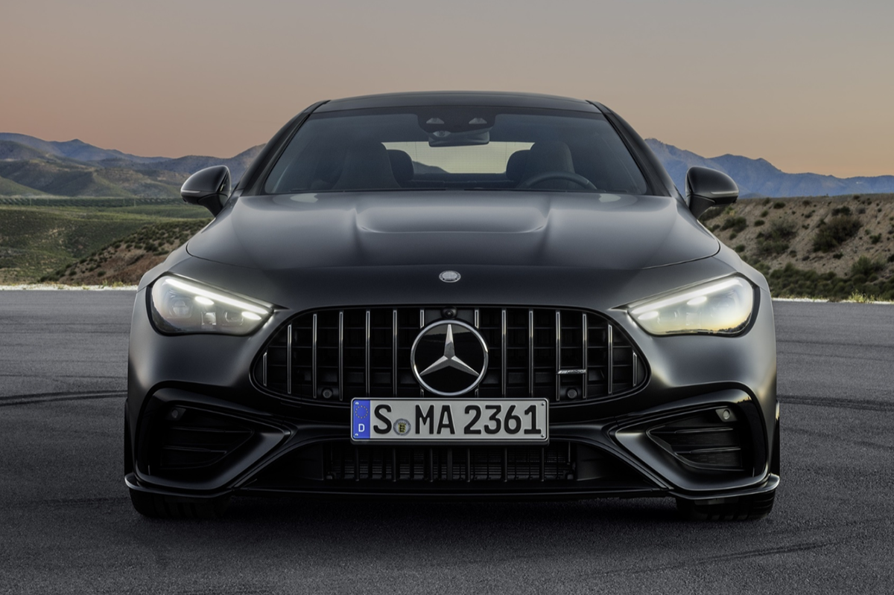
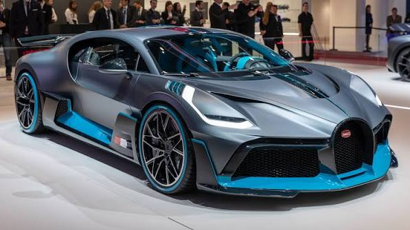
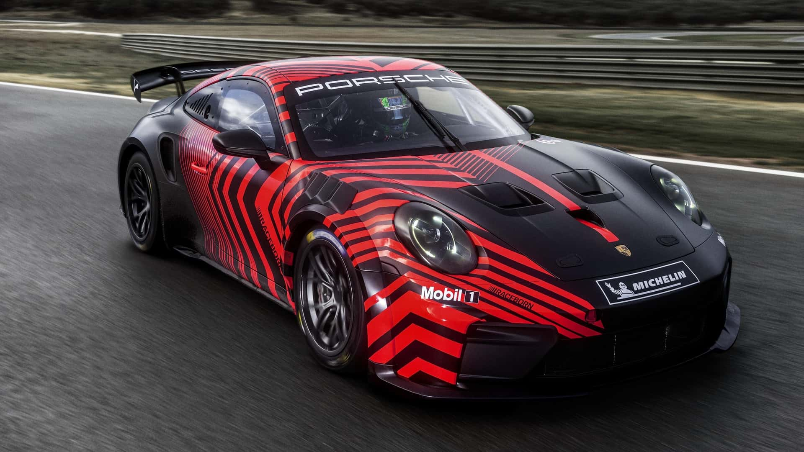
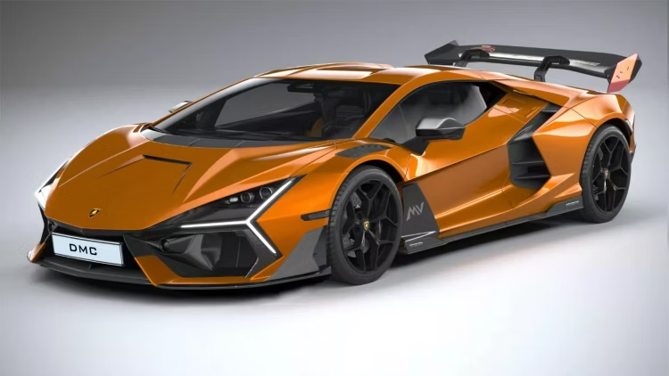

BMW M5 F90 ist eine sportliche Limousine von BMW. Sie wurde von 2017 bis 2023 produziert. Der M5 F90 wurde von der BMW M GmbH entwickelt. Er basiert auf dem BMW 5er und gehört zur sechsten Generation des M5. Der Wagen wurde in Dingolfing in Deutschland produziert. Der BMW M5 F90 ist für seine Kombination aus Sportlichkeit, Komfort und Leistung bekannt. Das Fahrzeug ist etwa fünf Meter lang und bietet Platz für fünf Personen. Im Jahr 2020 erhielt der BMW M5 F90 ein Facelift. Beim Facelift wurden unter anderem das Design und das Infotainment-System modernisiert. Der BMW M5 Competition bekam außerdem eine speziell abgestimmte Fahrwerksabstimmung. Der BMW M5 F90 verbindet sportliche Leistung, Komfort und Alltagstauglichkeit. Deshalb ist der M5 F90 für viele BMW-Fans ein besonderes und interessantes Auto.
Sie sind in der Lage mit diese Link mehr Information zu erhalten!
Mercedes-Benz — яке аз машҳуртарин ширкатҳои автомобилсозии Олмон мебошад. Ширкат соли 1926 таъсис ёфтааст. Асосгузорони таърихии он Карл Бенс ва Готтлиб Даймлер мебошанд. Номи ширкат бо сифати баланд, технологияҳои муосир ва тарҳи зебо машҳур аст. Mercedes-Benz мошинҳои седан, SUV, купе, кабриолет ва мошинҳои варзишӣ истеҳсол мекунад. Яке аз моделҳои машҳури он Mercedes-AMG GT мебошад. Версияҳои AMG барои суръат ва қувваи баланд сохта шудаанд. Mercedes-Benz инчунин мошинҳои барқии силсилаи EQ истеҳсол мекунад. Нишони Mercedes-Benz аз ситораи сеқирра иборат аст. Ин ситора яке аз рамзҳои машҳуртарини саноати автомобилсозӣ ба ҳисоб меравад. Mercedes-Benz дар бисёр кишварҳои ҷаҳон фурӯхта мешавад ва бренди олмонӣ дар бозори ҷаҳонӣ мавқеи қавӣ дорад
Малумоти бештари инчо
Bugatti — один из самых известных брендов роскошных и спортивных автомобилей в мире. Компания была основана Этторе Бугатти в 1909 году. Родина Bugatti — город Мольсайм (Molsheim) во Франции. Bugatti известна своими очень быстрыми, дорогими и редкими автомобилями. Одной из самых известных моделей является Bugatti Chiron. Chiron оснащён двигателем W16 объёмом 8,0 литра с четырьмя турбокомпрессорами. Ещё одна легендарная модель компании — Bugatti Veyron. Bugatti уделяет большое внимание скорости, мощности, дизайну и современным технологиям. Автомобили Bugatti выпускаются ограниченными сериями. Bugatti считается символом скорости, роскоши и высокого уровня инженерии.
Больше информации здесь
Porsche is a famous German automobile manufacturer. The company was founded in 1931 by Ferdinand Porsche. Porsche is known for producing sports cars, luxury cars, and SUVs. One of its most famous models is the Porsche 911. The Porsche 911 has been produced since 1964 and has become an iconic sports car. Porsche cars are known for their performance, quality, technology, and distinctive design. The company also produces popular SUVs such as the Porsche Cayenne and Porsche Macan. Porsche also develops electric vehicles, including the Porsche Taycan. Porsche is headquartered in Stuttgart, Germany. The Porsche logo features a shield with a horse in the center
More information here
Lamborghini ist ein berühmter italienischer Automobilhersteller. Die Firma wurde 1963 von Ferruccio Lamborghini gegründet. Lamborghini ist für schnelle, luxuriöse und sportliche Autos bekannt. Zu den bekannten Modellen gehören Lamborghini Aventador, Huracán und Revuelto. Die Autos haben ein modernes und auffälliges Design. Lamborghini verwendet leistungsstarke Motoren und moderne Technologien. Viele Lamborghini-Modelle können eine sehr hohe Geschwindigkeit erreichen. Die Marke steht für Luxus, Leistung, Geschwindigkeit und italienisches Design. Der Hauptsitz von Lamborghini befindet sich in Sant’Agata Bolognese, Italien. Lamborghini gehört heute zum Volkswagen-Konzern.
Weitere Information hier